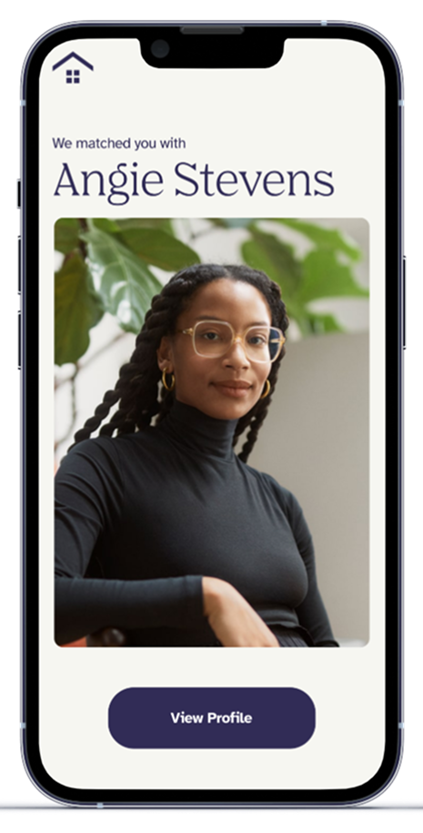
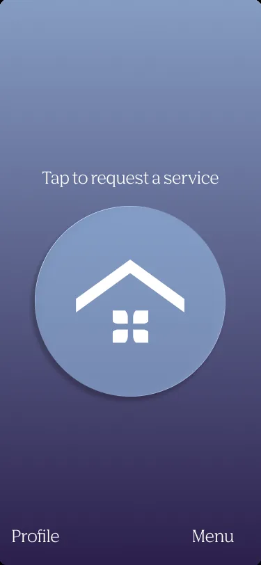
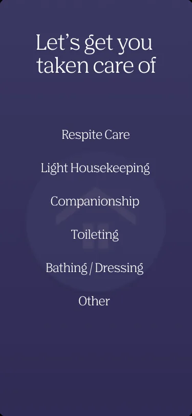
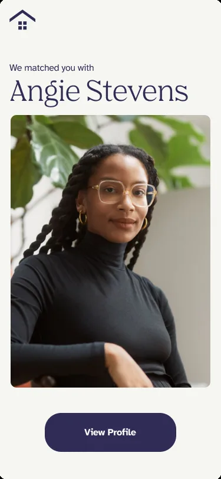
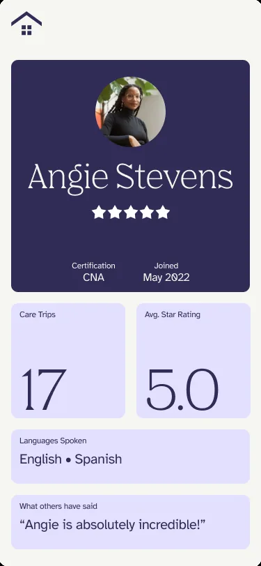
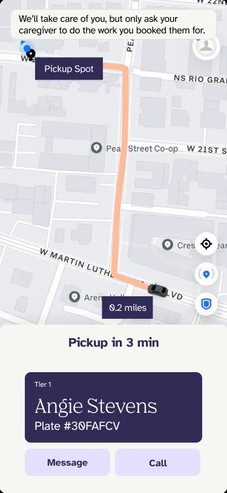

Shana Care
Care by the hour. Not by the shift.

- Role
- Cofounder, React Native frontend engineering
- Stack
- React Native, iOS and Android
- Industry
- Health tech, home care
- Market
- Greater Houston
OVERVIEW
Shana Care is an on-demand home-care company I cofounded in Houston. We built it around a simple idea: if someone needs an hour or two of help at home, they shouldn't have to pay for an entire shift.
The service connects families with Certified Nursing Assistants for assistive and personal care, with flexible bookings instead of eight-hour minimums or long-term contracts. We launched mobile apps for both iPhone and Android.
MY CONTRIBUTION
I cofounded the business and work on the React Native frontend for our iOS and Android apps. My engineering focus is the experience families use to arrange care: making service choices, costs, caregiver information and visit details understandable on a phone.
Home care is a high-trust service. Before letting someone into their home, a family needs to understand who is coming, what help they'll provide, what it will cost, and when they'll arrive. Turning those real-world requirements into clear mobile interfaces is a central part of my work on Shana Care.
THE MOBILE EXPERIENCE
These selected mobile designs show how we approached the journey from requesting assistance to getting comfortable with a caregiver. They illustrate the product experience, rather than documenting an exact release of every screen.





THE PROBLEM
Traditional agencies bill by the shift. Two hours of help, twice a week, turns into sixteen billed hours under an eight-hour minimum, which comes to about $2,425 a month. With Shana you book two hours and pay for two hours: about $346 a month.
Independence doesn’t mean doing it all alone. A little help twice a week is often the difference between staying home and leaving it.
HOW IT WORKS
PRICING
- Assistive care, $20/hour: light housekeeping, in-person companionship, respite care for family caregivers.
- Personal care, $26/hour: bathing and dressing, grooming, toileting assistance.
- Book as little as one hour at a time. One rate, no add-ons.
SAFETY
Every Shana caregiver is a licensed CNA, verified before their first visit and re-checked every ninety days: state nurse aide registry, abuse and neglect registry, OIG federal exclusion list, criminal background and sex offender registry. Families see the caregiver’s name, photo, certification, rating and visit history before they arrive.
For caregivers, Shana means setting your own hours, taking the visits you want, and earning $15.50 to $22 an hour.
WHAT WE SHIPPED
Shana Care is a live iOS and Android product serving Greater Houston. For me, it's both a startup I've helped build and an ongoing mobile engineering project: bringing a real-world service into an app people can use when they need help.
More Projects